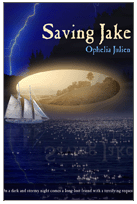

*This book maybe purchased through Amazon or Barnes & Noble.To get the book cover as illustrated above, order directly from New Leaf.
*This book maybe purchased through Amazon or Barnes & Noble.To get the book cover as illustrated above, order directly from New Leaf.
Title: Saving
Jake
Author: Ophelia Julien
Published By: New Leaf Books
ISBN: 1-930076-15-0
Book Description: Philip Corts has a special gift that his best friend Jake Holdridge won't let him ignore — he can "track" lost objects, people, and even past lives with his mind. But not all trackings have happy endings, and Philip vows to lay his gift to rest.
Now after an absence of nearly three years, Jake is slipping into desperation and comes back with a request that triggers the worst of Philip's nightmares. Could he track one more time? Philip already has enough to worry about with his first year of college, a scholarship contest deadline, and an absentee girl friend. Is their friendship worth it? Philip must decide: Watch Jake die, or try to save him and risk both their lives.